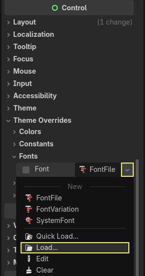
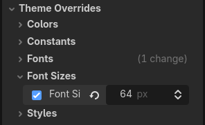
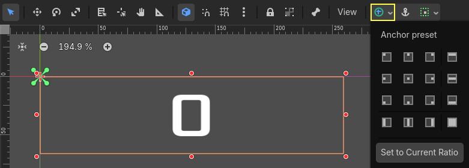
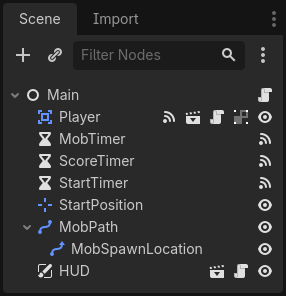
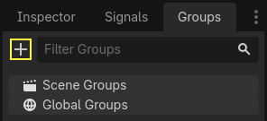

Heads up display
The final piece our game needs is a User Interface (UI) to display things like score, a "game over" message, and a restart button.
Create a new scene, click the "Other Node" button and add a CanvasLayer node named
HUD. "HUD" stands for "heads-up display", an informational display that
appears as an overlay on top of the game view.
The CanvasLayer node lets us draw our UI elements on a layer above the rest of the game, so that the information it displays isn't covered up by any game elements like the player or mobs.
The HUD needs to display the following information:
Score, changed by
ScoreTimer.A message, such as "Game Over" or "Get Ready!"
A "Start" button to begin the game.
The basic node for UI elements is Control. To create our UI, we'll use two types of Control nodes: Label and Button.
Create the following as children of the HUD node:
Click on the ScoreLabel and type a number into the Text field in the
Inspector. The default font for Control nodes is small and doesn't scale
well. There is a font file included in the game assets called
"Xolonium-Regular.ttf". To use this font, do the following:
Under "Theme Overrides > Fonts", choose "Load" and select the "Xolonium-Regular.ttf" file.

The font size is still too small, increase it to 64 under "Theme Overrides > Font Sizes".
Once you've done this with the ScoreLabel, repeat the changes for the Message and StartButton nodes.

Note
Anchors: Control nodes have a position and size,
but they also have anchors. Anchors define the origin -
the reference point for the edges of the node.
Arrange the nodes as shown below. You can drag the nodes to place them manually, or for more precise placement, use "Anchor Presets".

ScoreLabel
Add the text
0.Set the "Horizontal Alignment" and "Vertical Alignment" to
Center.Choose the "Anchor Preset"
Center Top.
Message
Add the text
Dodge the Creeps!.Set the "Horizontal Alignment" and "Vertical Alignment" to
Center.Set the "Autowrap Mode" to
Word, otherwise the label will stay on one line.Under "Control - Layout/Transform" set "Size X" to
480to use the entire width of the screen.Choose the "Anchor Preset"
Center.
Connecting HUD to Main
Now that we're done creating the HUD scene, go back to Main. Instance
the HUD scene in Main like you did the Player scene. The scene tree
should look like this, so make sure you didn't miss anything:

Now we need to connect the HUD functionality to our Main script. This
requires a few additions to the Main scene:
In the Signals tab, connect the HUD's start_game signal to the new_game()
function of the Main node by clicking the "Pick" button in the "Connect a Signal"
window and selecting the new_game() method or type "new_game" below "Receiver Method"
in the window. Verify that the green connection icon now appears next to
func new_game() in the script.
In new_game(), update the score display and show the "Get Ready" message:
$HUD.update_score(score)
$HUD.show_message("Get Ready")
var hud = GetNode<HUD>("HUD");
hud.UpdateScore(_score);
hud.ShowMessage("Get Ready!");
In game_over() we need to call the corresponding HUD function:
$HUD.show_game_over()
GetNode<HUD>("HUD").ShowGameOver();
Finally, add this to _on_score_timer_timeout() to keep the display in sync
with the changing score:
$HUD.update_score(score)
GetNode<HUD>("HUD").UpdateScore(_score);
Warning
Remember to remove the call to new_game() from
_ready() if you haven't already, otherwise
your game will start automatically.
Now you're ready to play! Click the "Play the Project" button.
Removing old creeps
If you play until "Game Over" and then start a new game right away, the creeps from the previous game may still be on the screen. It would be better if they all disappeared at the start of a new game. We just need a way to tell all the mobs to remove themselves. We can do this with the "group" feature.
In the Mob scene, select the root node and click the Groups tab next to the
Signals tab and the "+" button to open the "Create New Group" dialog.

Name the group mobs and click "ok" to add a new scene group.

Now all mobs will be in the "mobs" group.

We can then add the following line to the new_game() function in Main:
get_tree().call_group("mobs", "queue_free")
// Note that for calling Godot-provided methods with strings,
// we have to use the original Godot snake_case name.
GetTree().CallGroup("mobs", Node.MethodName.QueueFree);
The call_group() function calls the named function on every node in a
group - in this case we are telling every mob to delete itself.
The game's mostly done at this point. In the next and last part, we'll polish it a bit by adding a background, looping music, and some keyboard shortcuts.